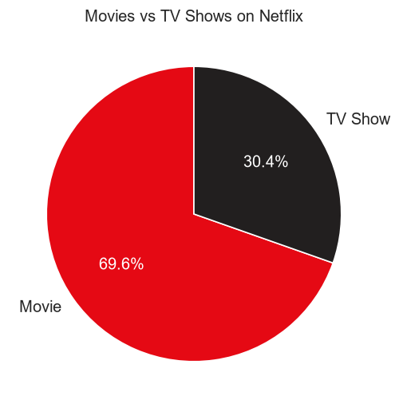
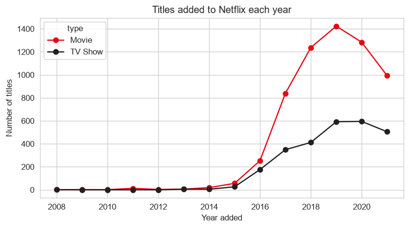
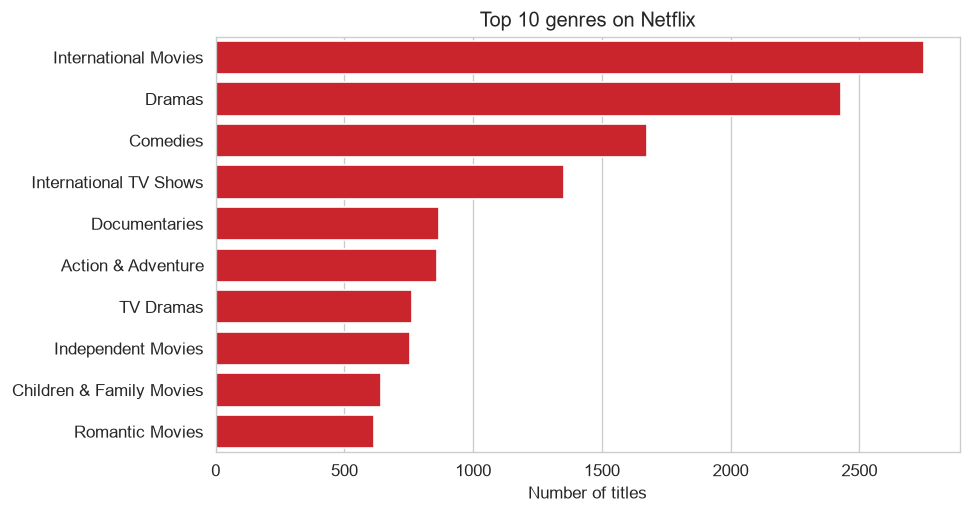
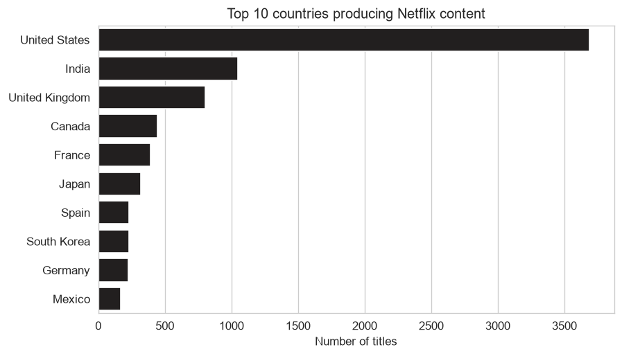
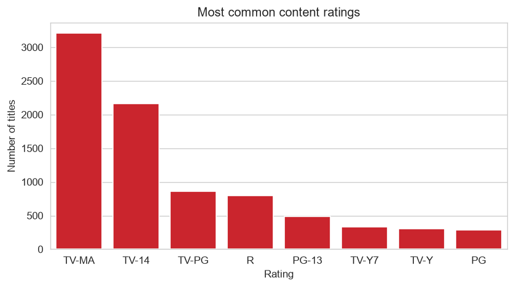
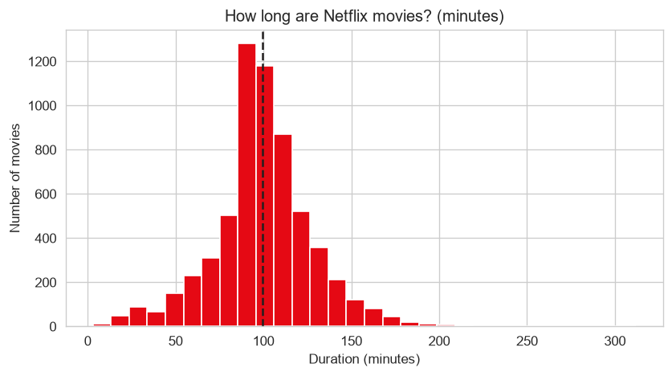

Data Visualization Project · by Anshu · BK Birla Institue of Engineering and Technology
Python (pandas, matplotlib, seaborn) analysis of the Netflix catalogue. Dataset: Kaggle. Code: GitHub repository.





